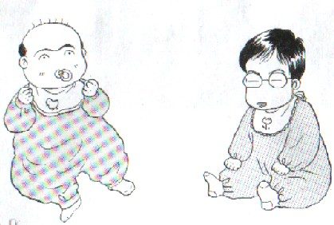

先般、「Quize クイズ」のカテゴリータイトルを「Riddle 牌謎」と変更した。実はこのサイトをオープンしたときから、「Quize クイズ」というカテゴリータイトルはあまり気に入っていなかった。
一口にクイズと言ってもいろいろなタイプがある。そこでいちおう内容によってパズルとクイズに分けた。パズルに分類した方は、牌を積み重ねたり、正方形に並べてみたりというようなタイプのもの。問題の内容から言ってパズル、あるいは麻雀パズルという名称で得心してる。
すると残る名称はクイズなので、単純にクイズとした。しかしクイズと云っても範囲は広い。俗に言う何切る問題でも麻雀クイズ、「この手は何点？」とか「この手は何待ち？」なんてのも麻雀クイズ。
しかしこのカテゴリーでは、それとは異なるタイプの問題をテーマにしている。そこで単なる「クイズ」ではなく、なにかこのタイプの問題にフィットしたタイトルはないかとず〜〜っと考えていた。そこで辿りついたのが、このMa-jan Ｒiddle。直訳すれば牌謎となる。
漢字クイズ/言葉クイズといえば、もちろん中国が本場。その伝統的な言葉遊びを、中国では詩謎（シメー）という。牌謎（パイメー）はそのモジリでもある。
おまけに麻雀といえば元は中国ゲーム。このカテゴリーで扱う問題のジャンル名として大いに気に入っている次第。ということで、今後は牌謎（パイメー）をよろしく(^0^)/
|